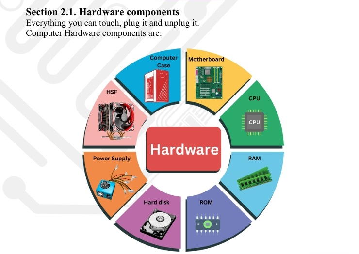
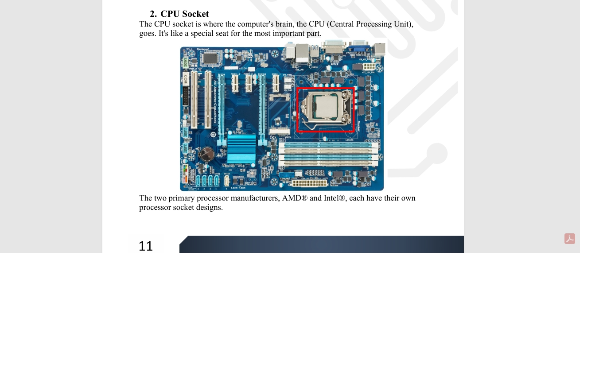
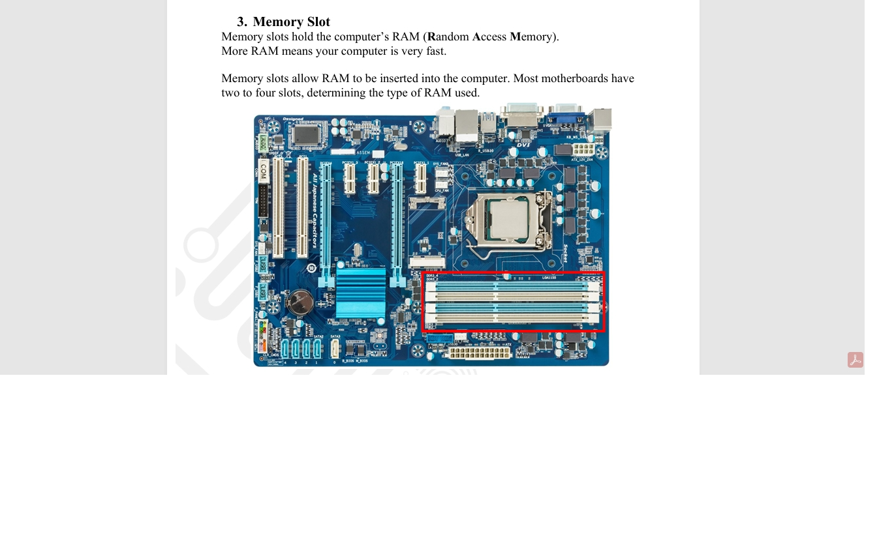
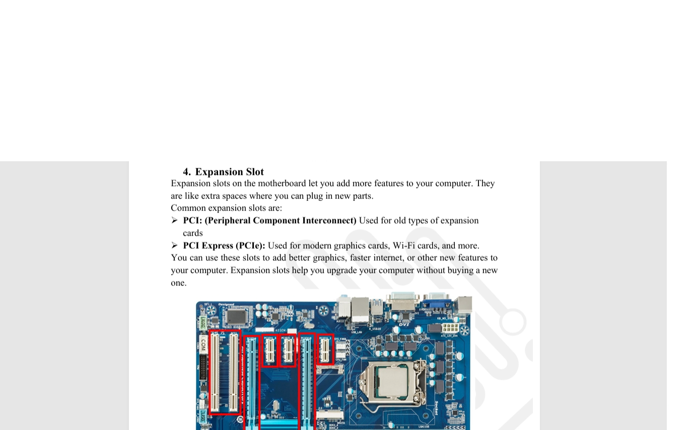
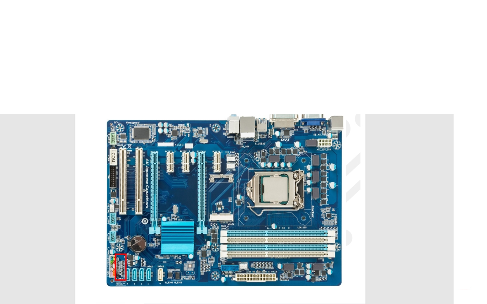

English :
Computer is an electronic device that processes information or data. It can store, retrieve, and process data.
A computer is a machine. It helps us do many things. We can use a computer to: write, play games, watch videos, or send messages.
Computers can be different depending on what they are used for.
Desktop Computer: A family uses a desktop computer at home to browse the internet and do homework.
الترجمة بالعربية العامية:
الكمبيوتر ده جهاز إلكتروني بيشتغل بمعالجة معلومات أو بيانات. بيقدر يخزن البيانات، يسترجعها، ويعالجها.
هو آلة بتساعدنا نعمل حاجات كتير — نكتب، نلعب ألعاب، نشوف فيديوهات، أو نبعت رسائل.
الكمبيوترات بتكون مختلفة حسب الاستخدام.
الكمبيوتر المكتبي (Desktop Computer): عيلة مثلاً بتستخدم كمبيوتر مكتبي في البيت علشان تتصفح الإنترنت وتعمل الواجب.
💡 التفسير:
"يعني إيه يعالج بيانات؟" يعني لو عندك معلومات مثلاً صور، نصوص، فيديو، الكمبيوتر ياخدهم، يعمل فيهم حاجات زي تعديل، تحليل، أو تنظيم، وبعدين يظهرهم ليك بطريقة مفهومة.
لما نقول "يخزن البيانات ويسترجعها" يعني مثلاً تحفظ صورة أو ملف، ولما تحتاجهم ترجع تشوفهم.
هو مش بس بتستخدمه لحاجات ترفيهية، كمان للدراسة، الشغل، التواصل، مشاهدة الأفلام والفيديوهات، كل حاجة.
"كمبيوتر مكتبي" ده النوع اللي بيكون ثابت في مكان: فيه شاشة، وكمان صندوق اللي فيه المكونات (المعالج، الهارد، وغيرها)، مع موس ولوحة مفاتيح. مش بتتحرك منه كتير زي اللابتوب.


Workstation

Server
Section 2: Computer Components
مكوّنات الكمبيوتر الأساسية
English:
Any computer device mainly consists of two major components:
- Hardware: The physical parts of a computer — things you can touch, like the monitor, keyboard, mouse, or CPU.
- Software: The programs and applications that tell the computer what to do — like Windows, games, or browsers.
Arabic (بالعربي):
أي كمبيوتر بيتكوّن أساسًا من جزئين رئيسيين:
- الهاردوير (Hardware): وده الجزء اللي نقدر نلمسه زيه زي الشاشة، الكيبورد، الماوس، الكيسة، السماعات... إلخ.

- السوفتوير (Software): وده البرامج اللي بتخلّي الكمبيوتر يشتغل ويعمل مهامه، زي نظام التشغيل ويندوز، برنامج الفوتوشوب، أو لعبة زي ببجي.

ببساطة كده :
الهاردوير هو جسم الكمبيوتر، والـ سوفتوير هو المخ اللي بيخليه يفكر ويتحرك .
Section 3: Motherboard
اللوحة الأم (Motherboard)
English:
The motherboard is the main circuit board of your computer.
It is also called the main board or logic board.
The motherboard makes everything in your computer work together.
It has many parts like
- Chipsets
- CPU Socket
- Memory Slots
- PCI Slots
- Disk Controllers
- Power Connectors
- BIOS Chip
- CMOS Battery
- Back-Panel Connectors
- Front-Panel Connectors
The motherboard connects all these parts so your computer can work.
بالعربي:
اللوحة الأم هي اللوحة الرئيسية في جهاز الكمبيوتر، وبتُعتبر العقل اللي بيربط كل أجزاء الجهاز ببعض.
أحيانًا بنسميها "اللوحة المنطقية" أو Mainboard.
كل المكونات الأساسية زي المعالج (CPU)، والرامات (RAM)، وكروت الشاشة، وحتى الهارد،
بيتوصلوا عليها علشان يشتغلوا مع بعض.
- Chipsets: مسؤولة عن التواصل بين المعالج وباقي المكونات.
- CPU Socket: المكان اللي بنركّب فيه المعالج.
- Memory Slots: فتحات لتركيب الرامات.
- PCI Slots: فتحات لتركيب كروت زي كارت الشاشة أو كارت الصوت.
- Disk Controllers: بتتحكم في توصيل الأقراص الصلبة (الهاردات).
- Power Connectors: مسؤولة عن توصيل الكهرباء لكل المكونات.
- BIOS Chip: شريحة صغيرة فيها نظام تشغيل بسيط بيدير الإقلاع.
- CMOS Battery: بطارية صغيرة بتحفظ إعدادات البيوس.
- Back-Panel Connectors: المنافذ الخلفية زي USB و HDMI.
- Front-Panel Connectors: لتوصيل أزرار الباور والـ USB الأمامية.
1. Chipsets (مجموعات الشرائح)
الـ Chipsets أو "مجموعات الشرائح" هي زي مدير المرور داخل الكمبيوتر 🧠🚦،
مهمتها إنها تنظم حركة البيانات بين كل أجزاء الجهاز — يعني بين المعالج (CPU)
والرامات (RAM)، وكروت الشاشة، والمخارج زي الـ USB والهاردات.
زمان كان فيه شريحتين رئيسيتين على الماذربورد:
- Northbridge (الجسر الشمالي):
دي كانت بتربط المعالج (CPU) بالأجزاء السريعة في الجهاز زي الرامات،
وكارت الشاشة المدمج، وفتحات الـ PCI Express.
يعني تقدر تقول إنها مسؤولة عن السرعة العالية والتواصل السريع.
- Southbridge (الجسر الجنوبي):
ودي كانت بتربط المعالج بالأجزاء الأبطأ شوية، زي الهاردات (SATA)،
ومخارج الـ USB، والصوت، والشبكة.
يعني كانت مسؤولة عن كل التواصل البطيء أو الثانوي في الجهاز.
في الماذربوردات الحديثة 💻 بقت الشريحتين دول موجودين في شريحة واحدة
داخل المعالج أو قريب منه، وده خلا الجهاز أسرع وكفاءته أعلى .

مخطط يوضح الفرق بين Northbridge و Southbridge
2. CPU Socket (منفذ المعالج)
الـ CPU Socket هو المكان اللي بنركب فيه عقل الكمبيوتر — المعالج (CPU) .
تقدر تعتبره الكرسي أو المقعد الخاص بالمعالج، وبيكون معمول بدقة كبيرة علشان
يركّب فيه المعالج صح من غير ما يتكسر أو يحصل أي تلف في البنات (Pins).
كل نوع معالج ليه سوكت مختلف يناسب تصميمه، فمثلًا:
Intel ليها أنواع زي LGA 1200 أو LGA 1700،
وAMD ليها أنواع زي AM4 أو AM5.
لازم دايمًا تتأكد إن الماذربورد والمعالج متوافقين في نوع السوكت.

صورة توضح شكل سوكت المعالج (CPU Socket)

Cpu

Cpu
The two primary processor manufacturers, AMD® and Intel®, each have their own
processor socket designs.
3. Memory Slot

Arabic Explanation:
فتحات الذاكرة أو الـ Memory Slots هي الأماكن اللي بنركب فيها الـ RAM (الذاكرة العشوائية) في الكمبيوتر.
كل ما كانت مساحة الـ RAM أكبر، كل ما كان الجهاز أسرع وأقدر على تشغيل برامج وألعاب أكتر في نفس الوقت.
أغلب الماذربورد بيكون فيها من فتحتين لأربع فتحات RAM، وده اللي بيحدد نوع وسعة الذاكرة اللي تقدر تستخدمها.

4. Expansion Slot

الشرح بالعربي:
فتحات التوسعة أو Expansion Slots هي الأماكن اللي بنقدر نركب فيها كروت إضافية علشان نزود إمكانيات الكمبيوتر.
يعني مثلاً لو عايز تركب كارت شاشة أقوى، أو كارت Wi-Fi، أو حتى كارت صوت احترافي — كل ده بيتركب في الفتحات دي.
في نوعين مشهورين من الفتحات:
- PCI: ده نوع قديم كان بيُستخدم في الكروت القديمة زي كروت الصوت أو الشبكة.
- PCI Express (PCIe): وده الأحدث، بيُستخدم في الكروت الحديثة زي كروت الشاشة وكروت الإنترنت السريعة.
الميزة الحلوة في فتحات التوسعة إنك تقدر تطور جهازك وتزوّده بإمكانيات جديدة من غير ما تشتري كمبيوتر جديد كامل.
5. Disk Controller
الشرح بالعربي:
وحدة التحكم في الأقراص (Disk Controller) هي جزء مهم جداً في اللوحة الأم،
ووظيفتها إنها تتحكم في عملية قراءة وكتابة البيانات على الأقراص زي الهارد (HDD) أو الـ SSD.
تقدر تعتبرها زي "المدير" اللي بينظم حركة البيانات بين وحدة التخزين وباقي أجزاء الكمبيوتر.
فيه أنواع مختلفة من وحدات التحكم دي:
- SATA: وده النوع المنتشر في أغلب الأجهزة الحديثة، بيستخدم في الهاردات والـ SSD العادية.
- IDE: نوع قديم كان بيستخدم في الأجهزة القديمة قبل ظهور الـ SATA.
- NVMe: ده الأحدث والأسرع، وبيُستخدم مع أقراص SSD الحديثة اللي بتدي أداء عالي جداً.
وحدة الـ Disk Controller مسؤولة عن سرعة واستقرار نقل البيانات بين التخزين والمعالج،
وبدونها الكمبيوتر مش هيقدر يوصل للملفات أو يشغل النظام بشكل سليم.
SATA (Serial Advanced Technology Attachment)
English :
SATA (Serial Advanced Technology Attachment) is a computer interface used to connect
storage devices like hard drives, solid-state drives (SSDs), and optical drives to a computer's motherboard.
It allows fast data transfer and is widely used in most modern computers.
عربي:
واجهة SATA هي وسيلة لتوصيل وحدات التخزين زي الأقراص الصلبة (Hard Disk)
أو الـ SSD أو حتى مشغلات الأقراص المدمجة باللوحة الأم.
بتساعد على نقل البيانات بسرعة كبيرة وبطريقة مستقرة،
وهي من أكتر أنواع التوصيلات استخداماً في الأجهزة الحديثة.
6. BIOS (Basic Input/Output System)
English Explanation:
The BIOS (Basic Input/Output System) is a small but very important program stored on a chip
inside your computer’s motherboard — often called the BIOS chip or the ROM chip.
Main Functions of BIOS:
- Starts the computer: It checks all hardware parts and launches the operating system when you power on the PC.
- Controls settings: It lets you configure things like boot order, date, and time in its setup menu.
- Manages hardware: It helps all hardware components communicate and work together properly.
BIOS is essential because it ensures the computer starts and functions correctly.
الشرح بالعربي:
كلمة BIOS اختصار لـ Basic Input/Output System يعني "نظام الإدخال والإخراج الأساسي"،
وده برنامج صغير بيكون محفوظ على شريحة داخل اللوحة الأم، اسمها شريحة الـ BIOS أو شريحة الـ ROM.
وظائف الـ BIOS:
- تشغيل الكمبيوتر: بيعمل فحص للأجزاء الداخلية للجهاز وبيبدأ تشغيل نظام التشغيل.
- التحكم في الإعدادات: من خلاله تقدر تغيّر إعدادات زي ترتيب الإقلاع أو الوقت والتاريخ.
- إدارة المكونات: بيساعد المكونات المختلفة في الجهاز إنها تتواصل مع بعضها وتشتغل بشكل منسّق.
الـ BIOS مهم جداً لأنه الأساس اللي بيخلي الجهاز يشتغل ويبدأ النظام بطريقة صحيحة.
